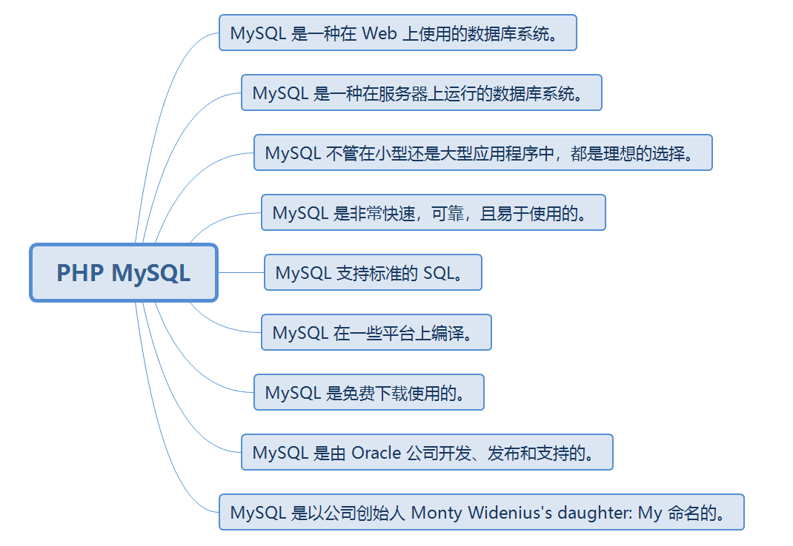
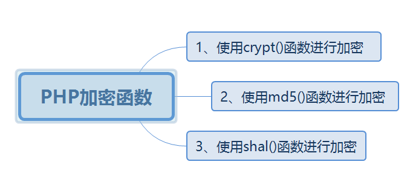
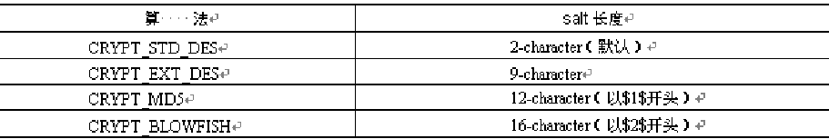

原文连接:https://www.cnblogs.com/dashucoding/p/10775639.html

连接MySQL
mysql_connect(servername,username,password);面向对象：
<?php
$servername = "localhost";
$username = "username";
$password = "password";
// 创建连接
$conn = new mysqli($servername, $username, $password);
// 检测连接
if ($conn->connect_error) {
die("连接失败: " . $conn->connect_error);
}
echo "连接成功";
?>面向过程：
<?php
$servername = "localhost";
$username = "username";
$password = "password";
// 创建连接
$conn = mysqli_connect($servername, $username, $password);
// 检测连接
if (!$conn) {
die("Connection failed: " . mysqli_connect_error());
}
echo "连接成功";
?>PDO：
<?php
$servername = "localhost";
$username = "username";
$password = "password";
try {
$conn = new PDO("mysql:host=$servername;dbname=myDB", $username, $password);
echo "连接成功";
}
catch(PDOException $e){
echo $e->getMessage();
}
?>连接在脚本执行完成后会自动关闭
//面向对象
$conn->close();
//面向过程
mysqli_close($conn);
//PDO
$conn = null;创建数据库
CREATE DATABASE database_nameINSERT INTO table_name
VALUES (value1, value2,....)SELECT column_name(s) FROM table_nameorder by关键词用于对于记录集中的数据进行排序
SELECT column_name(s)
FROM table_name
ORDER BY column_nameSELECT column_name(s)
FROM table_name
ORDER BY column_name DESCUPDATE table_name
SET column1=value, column2=value2,...
WHERE some_column=some_valueDELETE FROM table_name
WHERE some_column = some_value连接到ODBC
odbc_connect() 函数用于连接到 ODBC 数据源
$conn=odbc_connect('northwind','','');
$sql="SELECT * FROM customers";
$rs=odbc_exec($conn,$sql);
odbc_fetch_row($rs)odbc_fetch_row() 函数用于从结果集中返回记录
odbc_result() 函数用于从记录中读取字段
odbc_close() 函数用于关闭 ODBC 连接
array() 创建数组
array_change_key_case() 返回均为大写或小写的数组
array_chunk() 把一个数组分割为新的数组块
array_column() 返回输入数组中某个单一列的值
array_combine() 通过合并两个数组来创建新的数组
array_count_values() 用于统计数组中所有值出现的次数
array_diff() 比较数组，返回两个数组的差集
array_diff_assoc() 比较数组，返回两个数组的差集
array_diff_key() 比较数组，返回两个数组的差集
array_diff_uassoc() 比较数组，返回两个数组的差集
array_diff_ukey() 比较数组，返回两个数组的差集
array_key_exists() 检查指定的键名是否存在于数组中
array_map() 将用户自定义函数作用到给定数组的每个值上，返回新的值
array_merge() 把一个或多个数组合并为一个数组
array_multisort() 对多个数组或多维数组进行排序
array_pad() 将指定数量的带有指定值的元素插入到数组中
array_pop() 删除数组中的最后一个元素
array_product() 计算数组中所有值的乘积
array_push() 将一个或多个元素插入数组的末尾
array_rand() 从数组中随机选出一个或多个元素，返回键名
array_replace() 使用后面数组的值替换第一个数组的值
array_reverse() 将原数组中的元素顺序翻转，创建新的数组并返回
array_search() 在数组中搜索给定的值，如果成功则返回相应的键名
array_shift() 删除数组中的第一个元素，并返回被删除元素的值
array_slice() 返回数组中的选定部分
array_splice() 把数组中的指定元素去掉并用其它值取代
array_sum() 返回数组中所有值的和
array_unique() 删除数组中重复的值
array_unshift() 在数组开头插入一个或多个元素
array_values() 返回数组中所有的值
arsort() 对关联数组按照键值进行降序排序
asort() 对关联数组按照键值进行升序排序
count() 返回数组中元素的数目
each() 返回数组中当前的键／值对
current() 返回数组中的当前元素
end() 将数组的内部指针指向最后一个元素
extract() 从数组中将变量导入到当前的符号表
in_array() 检查数组中是否存在指定的值
key() 从关联数组中取得键名
krsort() 对关联数组按照键名降序排序
ksort() 对关联数组按照键名升序排序
list() 把数组中的值赋给一些数组变量
next() 将数组中的内部指针向后移动一位
prev() 将数组的内部指针倒回一位
range() 创建一个包含指定范围的元素的数组
reset() 将数组的内部指针指向第一个元素
rsort() 对数值数组进行降序排序
sort() 对数值数组进行升序排序
uasort() 对数组中的键值进行排序
uksort() 对数组中的键名进行排序
usort() 使用用户自定义的比较函数对数组进行排序
PHP加密函数

单向加密功能
string crypt(string str[, string salt]);
使用md5()函数进行加密
string md5 ( string str [, bool raw_output] );使用sha1()函数进行加密
string sha1 ( string str [, bool raw_output] )1、Mcrypt扩展库
2、Mhash扩展库
在php.ini文件中找到“;extension=php_mcrypt.dll”和“;extension=php_mhash.dll”
<!DOCTYPE html PUBLIC "-//W3C//DTD XHTML 1.0 Transitional//EN" "http://www.w3.org/TR/xhtml1/DTD/xhtml1-transitional.dtd">
<html xmlns="http://www.w3.org/1999/xhtml">
<head>
<meta http-equiv="Content-Type" content="text/html; charset=gb2312" />
<title>使用md5()和sha1()函数进行加密</title>
</head>
<body>
<div align="center">
<table border="1" cellspacing="0" cellpadding="0">
<tr>
<td height="30" colspan="2" align="center" valign="middle" scope="col"><?php echo 'md5()和shal()函数的对比效果'; ?></td>
</tr>
<tr>
<td width="200" height="30" align="right" valign="middle"><?php echo '使用md5()函数加密字符串PHPER：' ?></td>
<td width="200" height="30" align="center" valign="middle"><?php echo md5('PHPER'); ?></td>
</tr>
<tr>
<td width="200" height="30" align="right" valign="middle"><?php echo '使用shal()函数加密字符串PHPER：'; ?></td>
<td width="200" height="30" align="center" valign="middle"><?php echo sha1('PHPER'); ?></td>
</tr>
</table>
</div>
</body>
</html><!DOCTYPE html PUBLIC "-//W3C//DTD XHTML 1.0 Transitional//EN" "http://www.w3.org/TR/xhtml1/DTD/xhtml1-transitional.dtd">
<html xmlns="http://www.w3.org/1999/xhtml">
<head>
<meta http-equiv="Content-Type" content="text/html; charset=gb2312" />
<title>Mcrypt库支持的加密算法与加密模式</title>
</head>
<body>
<?php
$en_dir = mcrypt_list_algorithms();
echo "Mcrypt支持的算法有：";
foreach($en_dir as $en_value){
echo $en_value." ";
}
?>
<?php
$mo_dir = mcrypt_list_modes();
echo "<p>Mcrypt支持的加密模式有：";
foreach($mo_dir as $mo_value){
echo $mo_value." ";
}
?>
</body>
</html><!DOCTYPE html PUBLIC "-//W3C//DTD XHTML 1.0 Transitional//EN" "http://www.w3.org/TR/xhtml1/DTD/xhtml1-transitional.dtd">
<html xmlns="http://www.w3.org/1999/xhtml">
<head>
<meta http-equiv="Content-Type" content="text/html; charset=gb2312" />
<title>使用mcrypt库加密解密</title>
></head>
<body>
<?php
$str = "被加密的内容：相见时难别亦难 东风无力百花残";
$key = "key:111";
$cipher = MCRYPT_DES;
$modes = MCRYPT_MODE_ECB;
//初始化向量
$iv = mcrypt_create_iv(mcrypt_get_iv_size($cipher,$modes),MCRYPT_RAND);
echo "加密前：".$str."<p>";
//加密：
$str_encrypt = mcrypt_encrypt($cipher,$key,$str,$modes,$iv);
echo "加密后：".$str_encrypt." <p>";
$str_decrypt = mcrypt_decrypt($cipher,$key,$str_encrypt,$modes,$iv);
echo "还原：".$str_decrypt;
?>
</body>
</html><!DOCTYPE html PUBLIC "-//W3C//DTD XHTML 1.0 Transitional//EN" "http://www.w3.org/TR/xhtml1/DTD/xhtml1-transitional.dtd">
<html xmlns="http://www.w3.org/1999/xhtml">
<head>
<meta http-equiv="Content-Type" content="text/html; charset=gb2312" />
<title>Mhash库支持的加密算法</title>
</head>
<body>
<?php
$num = mhash_count(); //函数返回最大的hash id
echo "Mhash库支持的算法有：";
for($i = 0; $i <= $num; $i++){
echo $i."=>".mhash_get_hash_name($i)." "; //输出每一个hash id 的名称
}
?>
</body>
</html><!DOCTYPE html PUBLIC "-//W3C//DTD XHTML 1.0 Transitional//EN" "http://www.w3.org/TR/xhtml1/DTD/xhtml1-transitional.dtd">
<html xmlns="http://www.w3.org/1999/xhtml">
<head>
<meta http-equiv="Content-Type" content="text/html; charset=gb2312" />
<title>使用mhash库生成校验码</title>
</head>
<body>
<?php
$filename = '08.txt';
$str = file_get_contents($filename);
$hash = 2;
$password = '111';
$salt = '1234';
$key = mhash_keygen_s2k(1,$password,$salt,10);
$str_mhash = bin2hex(mhash($hash,$str,$key));
echo "文件08.txt的校验码是：".$str_mhash;
?>
</body>
</html>登录：
<script language="javascript">
function chk(form){
if(form.name.value == '' || form.pwd.value == ''){
alert('请输入信息');
return false;
}
}
</script>
<table border="1" cellpadding="0" cellspacing="0" align="center">
<form id="lg" name="lg" method="post" action="index_chk.php" onSubmit="return chk(lg)">
<tr>
<td colspan="2" height="25" align="center" valign="middle">用户登录</td>
</tr>
<tr>
<td width="75" height="25" align="right" valign="middle">用户名：</td>
<td height="25" align="left" valign="middle"><input name="name" type="text" size="20" maxlength="20"></td>
</tr>
<tr>
<td height="25" align="right" valign="middle">密码：</td>
<td height="25" align="left" valign="middle"><input name="pwd" type="password" size="20" maxlength="20"></td>
</tr>
<tr>
<td height="25" align="right">登录方式：</td>
<td align="left">
<select name="method">
<option value="crypt">crypt加密</option>
<option value="md5">md5加密</option>
</select>
</td>
</tr>
<tr>
<td height="25" colspan="2" align="center" valign="middle"><input type="submit" value="登陆"> <a href="reg.php">注册</a></td>
</tr>
</form>
</table>
<?php
$name = $_POST['name'];
$pwd = $_POST['pwd'];
$meth = $_POST['method'];
$key = 'tomorrow';
if($name != '' and $pwd != ''){
$conn = mysql_connect("localhost","root","root") or die("数据库链接错误".mysql_error());
mysql_select_db("db_database15",$conn) or die("数据库访问错误".mysql_error());
mysql_query("set names gb2312");
if($meth == "crypt"){
$pwd = crypt(trim($pwd),$key);
}else{
$pwd = md5($pwd);
}
$sql = "select * from tb_user where user = '".$name."' and password = '".$pwd."'";
$rst = mysql_query($sql,$conn);
if(mysql_num_rows($rst) > 0){
echo "<font color='red'>用户登陆成功</font> <a href=index.php>返回</a>";
}else{
echo "<script>alert('密码或帐号输入错误');history.go(-1);</script>";
}
}
?><script language="javascript">
function rg(form){
if(form.name.value == '' || form.pwd.value == ''){
alert('请填写信息');
return false;
}
if(form.pwd.value != form.pwd2.value){
alert("两次密码不同");
return false;
}
}
</script>
<table border="1" cellpadding="0" cellspacing="0" align="center">
<form id="reg" name="reg" method="post" action="reg_chk.php" onSubmit="return rg(reg)">
<tr>
<td colspan="2" align="center" valign="middle" height="25">用户注册</td>
</tr>
<tr>
<td width="75" height="25" align="right">用户名：</td>
<td align="left"><input id="name" name="name" type="text" size="20" /></td>
</tr>
<tr>
<td height="25" align="right">密码：</td>
<td align="left"><input id="pwd" name="pwd" type="password" size="20" /></td>
</tr>
<tr>
<td height="25" align="right">确认密码：</td>
<td align="left"><input id="pwd2" name="pwd2" type="password" size="20" /></td>
</tr>
<tr>
<td height="25" align="right">加密方式：</td>
<td align="left">
<select name="method">
<option value="crypt">crypt加密</option>
<option value="md5">md5加密</option>
</select>
</td>
</tr>
<tr>
<td colspan="2" height="25" align="center">
<input type="submit" value="注册" />
<a href="index.php">登录</a>
</td>
</tr>
</form>
</table>
<?php
$name = $_POST['name'];
$pwd = $_POST['pwd'];
$meth = $_POST['method'];
$key = 'tomorrow';
if($name != '' and $pwd != ''){
$conn = mysql_connect("localhost","root","root") or die("数据库链接错误".mysql_error());
mysql_select_db("db_database15",$conn) or die("数据库访问错误".mysql_error());
mysql_query("set names gb2312");
if($meth == "crypt"){
$pwd = crypt(trim($pwd),$key);
}else{
$pwd = md5($pwd);
}
$sql = "insert into tb_user(user,password) values('".$name."','".$pwd."')";
$rst = mysql_query($sql,$conn);
if($rst){
echo "<script>alert('添加成功，请登录');location='index.php';</script>";
}else{
echo "<script>alert('添加失败');history.go(-1);</script>";
}
}
?>结言
好了，欢迎在留言区留言，与大家分享你的经验和心得。
感谢你学习今天的内容，如果你觉得这篇文章对你有帮助的话，也欢迎把它分享给更多的朋友，感谢。
感谢！承蒙关照！您真诚的赞赏是我前进的最大动力！